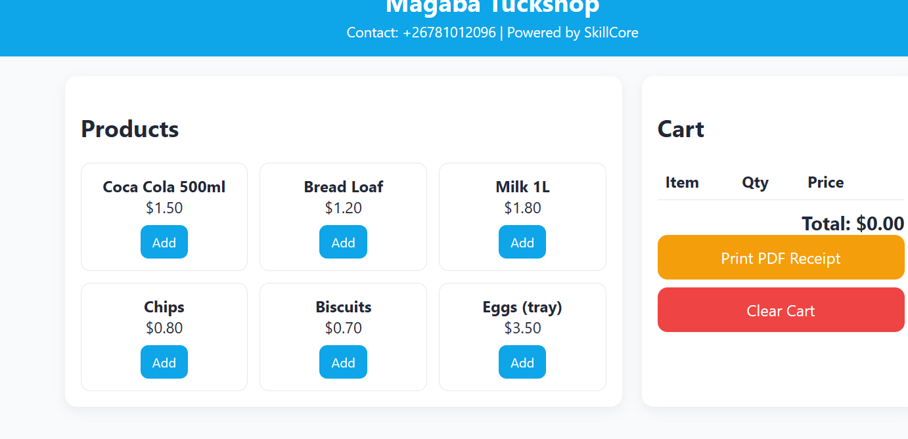
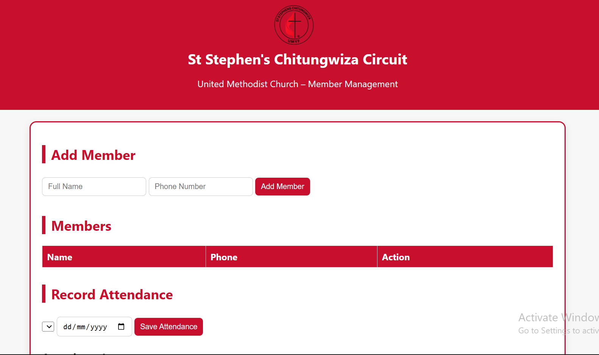
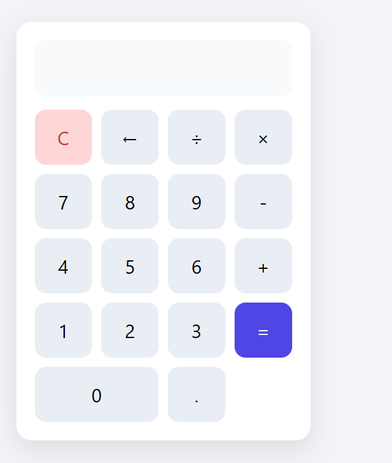

Point of Sale of Magaba Tuckshop
A lightweight web POS for Magaba Tuckshop that adds items, calculates totals, and generates a styled PDF receipt (built with HTML, CSS, JS + jsPDF).



A lightweight web POS for Magaba Tuckshop that adds items, calculates totals, and generates a styled PDF receipt (built with HTML, CSS, JS + jsPDF).

